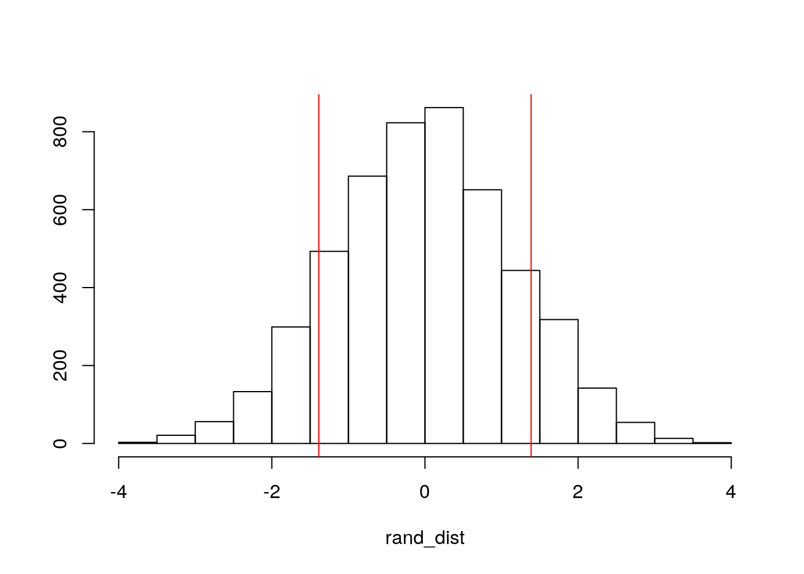
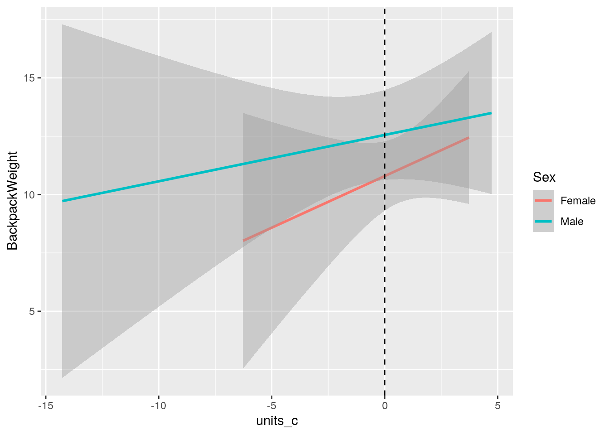
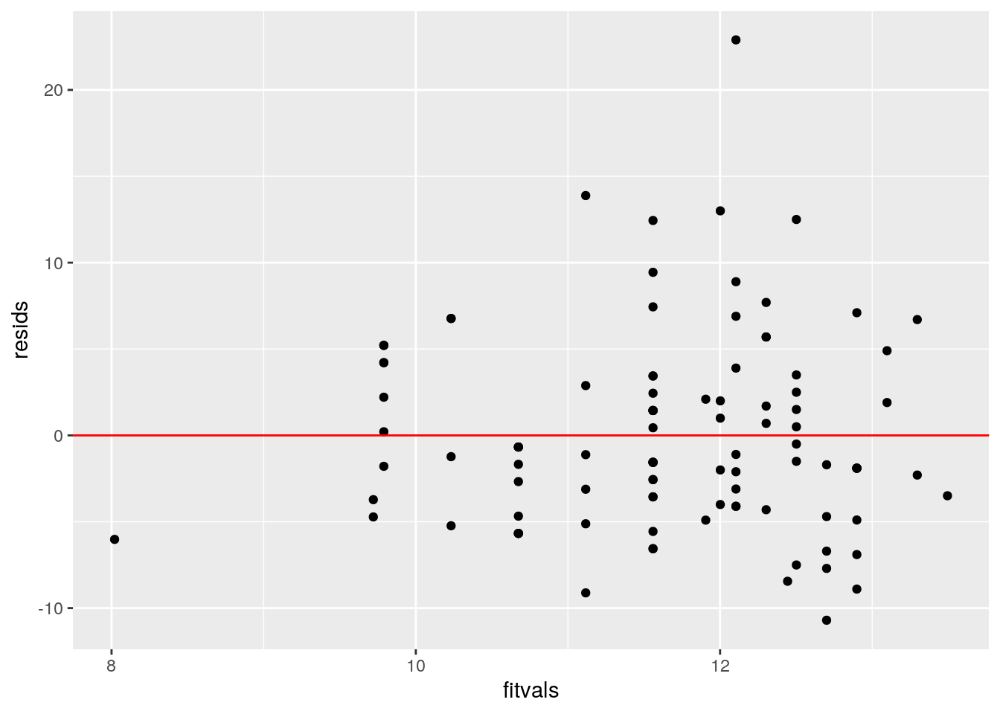
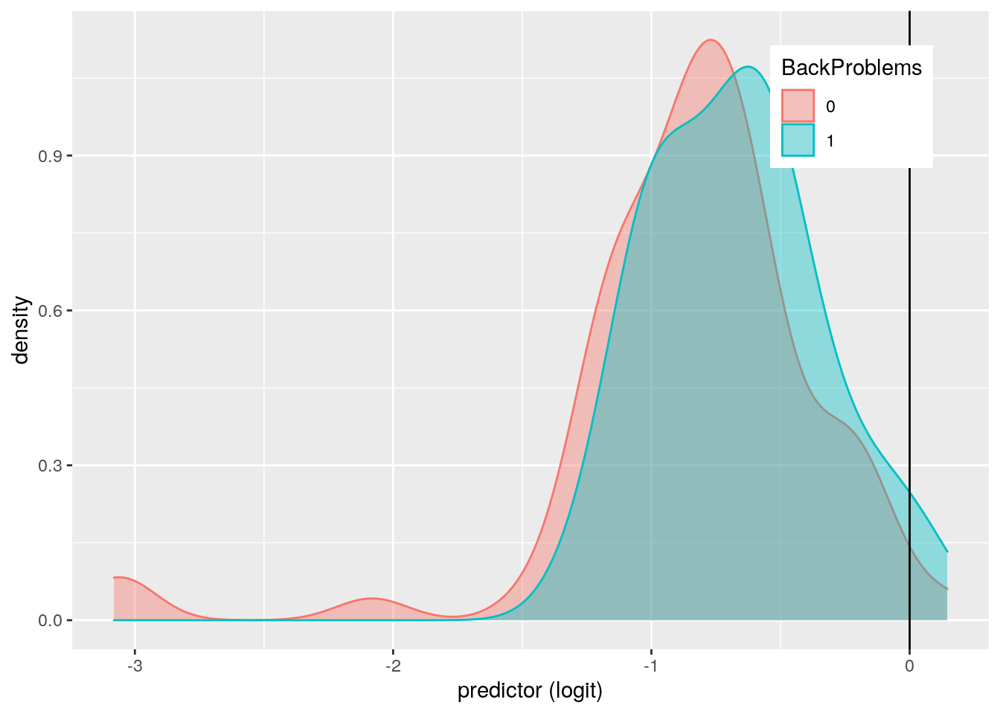
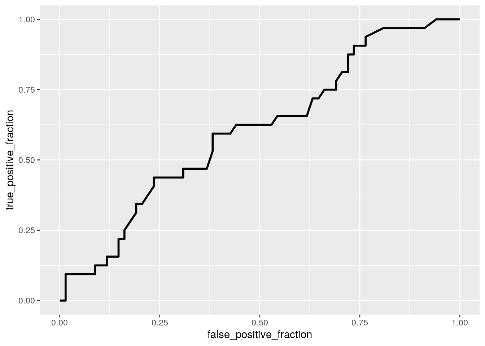

The dataset I have chosen for this project consists of information regarding the backpack weight of 100 college-aged subjects in pounds, their respective body weight in pounds, whether or not they have back problems (0=no,1=yes), their major, year in school, sex, and how many class hours they were currently taking when filling out the survey. I chose this backpack dataset because I have always had back pain due to my heavy backpack, and I am interested to see if there are any other variables that may affect this issue.
library(readr)
library(tidyverse)
Backpack <- read.csv("Backpack.csv")
Backpack <- Backpack %>% select(-X)A one-way MANOVA was conducted to test the effect of sex on the numeric variables (back pack weight, ratio, back problems, units, and year). With a p-value of 3.89e-09, the null hypothesis that there is no significance between sex and any of the numeric variables is rejected. After running the ANOVA tests, significance between sex and back problems and sex and units was found with p-values of 0.0055 and 0.03, respectively. Two post-hoc tests were then ran showing the same p-values for sex and back problems and sex and units. A total of ten tests were performed across the MANOVA, univariate ANOVAs, and the post-hoc t-tests. The probability of having at least one type I error is 40.13%. The significance level with the bonferroni correction is 0.005 which makes the p-values for the ANOVA test between back problems and sex and the ANOVA test for units and sex no longer significant because they have values of 0.0055 and 0.03, respectively. Using the Shapiro test to test if the MANOVA assumptions were met, a p-value of 3.15e-06 for males and 0.0004 for females indicates that assumptions were violated since the null hypothesis that the assumption is met must be rejected.
man1 <- manova(cbind(BackpackWeight, Ratio, BackProblems, Units,
Year) ~ Sex, data = Backpack)
summary(man1)## Df Pillai approx F num Df den Df Pr(>F)
## Sex 1 0.39404 12.225 5 94 3.895e-09 ***
## Residuals 98
## ---
## Signif. codes: 0 '***' 0.001 '**' 0.01 '*' 0.05 '.' 0.1 ' ' 1summary.aov(man1)## Response BackpackWeight :
## Df Sum Sq Mean Sq F value Pr(>F)
## Sex 1 47.5 47.535 1.4365 0.2336
## Residuals 98 3242.9 33.091
##
## Response Ratio :
## Df Sum Sq Mean Sq F value Pr(>F)
## Sex 1 0.001456 0.0014559 1.0856 0.3
## Residuals 98 0.131431 0.0013411
##
## Response BackProblems :
## Df Sum Sq Mean Sq F value Pr(>F)
## Sex 1 1.6549 1.65495 8.0669 0.005483 **
## Residuals 98 20.1051 0.20515
## ---
## Signif. codes: 0 '***' 0.001 '**' 0.01 '*' 0.05 '.' 0.1 ' ' 1
##
## Response Units :
## Df Sum Sq Mean Sq F value Pr(>F)
## Sex 1 36.73 36.728 4.8445 0.03008 *
## Residuals 98 742.98 7.581
## ---
## Signif. codes: 0 '***' 0.001 '**' 0.01 '*' 0.05 '.' 0.1 ' ' 1
##
## Response Year :
## Df Sum Sq Mean Sq F value Pr(>F)
## Sex 1 0.364 0.36364 0.186 0.6672
## Residuals 98 191.636 1.95547pairwise.t.test(Backpack$BackProblems, Backpack$Sex, p.adj = "none")##
## Pairwise comparisons using t tests with pooled SD
##
## data: Backpack$BackProblems and Backpack$Sex
##
## Female
## Male 0.0055
##
## P value adjustment method: nonepairwise.t.test(Backpack$Units, Backpack$Sex, p.adj = "none")##
## Pairwise comparisons using t tests with pooled SD
##
## data: Backpack$Units and Backpack$Sex
##
## Female
## Male 0.03
##
## P value adjustment method: none1 - 0.95^10 #probability of type 1 error## [1] 0.40126310.05/10 #Boneferroni adusted significance## [1] 0.005library(rstatix)
group <- Backpack$Sex
DVs <- Backpack %>% select(BackpackWeight, Ratio, BackProblems,
Units, Year)
# Test multivariate normality for each group (null:
# assumption met)
sapply(split(DVs, group), mshapiro_test)## Female Male
## statistic 0.9061904 0.8055263
## p.value 0.0004116052 3.152925e-06A mean difference randomization test was conducted between backpack weight and the two different sexes. The test statistic in this randomization test is 1.386. The null hypothesis that there is no difference between the backpack weight of males and females was rejected with a p-value of 0.235, so the alternative hypothesis that there is a difference between the mean values of the sexes is accepted.
Backpack %>% group_by(Sex) %>% summarize(mean_bp_wt = mean(BackpackWeight)) %>%
summarize(mean_diff = diff(mean_bp_wt)) %>% glimpse## Rows: 1
## Columns: 1
## $ mean_diff <dbl> 1.385859rand_dist <- vector()
for (i in 1:5000) {
new <- data.frame(bp_wt = sample(Backpack$BackpackWeight),
sex = Backpack$Sex)
rand_dist[i] <- mean(new[new$sex == "Male", ]$bp_wt) - mean(new[new$sex ==
"Female", ]$bp_wt)
}
mean(rand_dist > 1.386 | rand_dist < -1.386)## [1] 0.2404{
hist(rand_dist, main = "", ylab = "")
abline(v = c(1.386, -1.386), col = "red")
}
After regressing backpack weight on the interaction of units and sex, the mean/predicted backpack weight when there are no units being taken is 10.79lbs. For every one unit of hours being taken, the weight of the backpack increases by 0.44lbs. For every one unit increase for males, the weight of the backpack increases by 1.76lbs compared to females. The slope of units for males on backpack weight is -0.24 when the amount of hours taken is zero. Based on the graph to test the assumption of linearity, the data is not linear since there is a slight pattern shown in the between the residuals and the fitted values. The Shapiro test was used to check the assumption of normality which was violated because the p-value is 0.0005 which indicates that the null hypothesis that there is normality is rejected. The Breuch-Pagan test was used to check the assumption of homoskedasticity which was not violated because the p-value is 0.75 which indicates that the null hypothesis that there is homoskedasticity cannot be rejected. After performing the regression using robust standard errors, there was no change in significance of the intercept or the coefficients, and only slight changes were seen in the standard errors and p-values. There was a slightly large change in the t-values but nothing significantly different. 0.0322 of the variation in outcome is explained by the model, with 0.002 of variation in the outcome being explained with the adjusted value of R-squared.
Backpack$units_c <- Backpack$Units - mean(Backpack$Units, na.rm = T)
fit1 <- lm(BackpackWeight ~ units_c * Sex, data = Backpack)
summary(fit1)##
## Call:
## lm(formula = BackpackWeight ~ units_c * Sex, data = Backpack)
##
## Residuals:
## Min 1Q Median 3Q Max
## -10.700 -4.027 -1.367 3.023 22.896
##
## Coefficients:
## Estimate Std. Error t value Pr(>|t|)
## (Intercept) 10.7939 0.8103 13.320 <2e-16 ***
## units_c 0.4424 0.4221 1.048 0.297
## SexMale 1.7615 1.1919 1.478 0.143
## units_c:SexMale -0.2437 0.4876 -0.500 0.618
## ---
## Signif. codes: 0 '***' 0.001 '**' 0.01 '*' 0.05 '.' 0.1 ' ' 1
##
## Residual standard error: 5.76 on 96 degrees of freedom
## Multiple R-squared: 0.0322, Adjusted R-squared: 0.001953
## F-statistic: 1.065 on 3 and 96 DF, p-value: 0.3679Backpack %>% ggplot(aes(units_c, BackpackWeight, color = Sex)) +
geom_smooth(method = "lm") + geom_vline(xintercept = 0, lty = 2)
library(lmtest)
library(sandwich)
resids <- fit1$residuals
fitvals <- fit1$fitted.values
ggplot() + geom_point(aes(fitvals, resids)) + geom_hline(yintercept = 0,
color = "red")
shapiro.test(resids)##
## Shapiro-Wilk normality test
##
## data: resids
## W = 0.94678, p-value = 0.0005122bptest(fit1)##
## studentized Breusch-Pagan test
##
## data: fit1
## BP = 1.2058, df = 3, p-value = 0.7516coeftest(fit1, vcov = vcovHC(fit1))##
## t test of coefficients:
##
## Estimate Std. Error t value Pr(>|t|)
## (Intercept) 10.79386 0.74840 14.4226 <2e-16 ***
## units_c 0.44238 0.45396 0.9745 0.3323
## SexMale 1.76145 1.20443 1.4625 0.1469
## units_c:SexMale -0.24375 0.52621 -0.4632 0.6443
## ---
## Signif. codes: 0 '***' 0.001 '**' 0.01 '*' 0.05 '.' 0.1 ' ' 1The bootstrapped standard errors decrease slightly compared to the original and robust standard errors. There is a slight increase in the bootstrapped standard error for the interaction of units and sex which indicates that there is a slight increase in the p-value for this interaction. However, this slight increase in the p-value does not change the fact that the p-values for the original and robust standard errors are well above 0.05, so the null hypothesis that this interaction is not a significant predictor of backpack weight is still accepted.
boot_dat <- sample_frac(Backpack, replace = T)
# repeat 5000 times
samp_distn <- replicate(5000, {
boot_dat <- sample_frac(Backpack, replace = T)
fit2 <- lm(BackpackWeight ~ units_c * Sex, data = boot_dat)
coef(fit2)
})
## Estimated SEs
samp_distn %>% t %>% as.data.frame %>% summarize_all(sd)## (Intercept) units_c SexMale units_c:SexMale
## 1 0.6992315 0.4035235 1.151859 0.5198108## Original SEs
summary(fit1)##
## Call:
## lm(formula = BackpackWeight ~ units_c * Sex, data = Backpack)
##
## Residuals:
## Min 1Q Median 3Q Max
## -10.700 -4.027 -1.367 3.023 22.896
##
## Coefficients:
## Estimate Std. Error t value Pr(>|t|)
## (Intercept) 10.7939 0.8103 13.320 <2e-16 ***
## units_c 0.4424 0.4221 1.048 0.297
## SexMale 1.7615 1.1919 1.478 0.143
## units_c:SexMale -0.2437 0.4876 -0.500 0.618
## ---
## Signif. codes: 0 '***' 0.001 '**' 0.01 '*' 0.05 '.' 0.1 ' ' 1
##
## Residual standard error: 5.76 on 96 degrees of freedom
## Multiple R-squared: 0.0322, Adjusted R-squared: 0.001953
## F-statistic: 1.065 on 3 and 96 DF, p-value: 0.3679## Robust SEs
coeftest(fit1, vcov = vcovHC(fit1))##
## t test of coefficients:
##
## Estimate Std. Error t value Pr(>|t|)
## (Intercept) 10.79386 0.74840 14.4226 <2e-16 ***
## units_c 0.44238 0.45396 0.9745 0.3323
## SexMale 1.76145 1.20443 1.4625 0.1469
## units_c:SexMale -0.24375 0.52621 -0.4632 0.6443
## ---
## Signif. codes: 0 '***' 0.001 '**' 0.01 '*' 0.05 '.' 0.1 ' ' 1After predicting back problems from backpack weight and units, the odds of having back problems increases by a factor of 1.04 for every one unit increase of backpack weight. For every one unit increase of class hours taken, the odds of having back problems increases by a factor of 1.15. The odds of having back problems when backpack weight and hours taken is zero is 0.037. The model is predicting with 0.68 accuracy, 0.031 sensitivity, 0.985 specificity, 0.50 precision, and an predicting overall 0.604 which is classified as poor. The AUC calculated with the ROC curve is 0.604 which indicates that the model is poor at predicting back problems from backpack weight and units taken.
fit_binary <- glm(BackProblems ~ BackpackWeight + Units, data = Backpack,
family = binomial)
summary(fit_binary)##
## Call:
## glm(formula = BackProblems ~ BackpackWeight + Units, family = binomial,
## data = Backpack)
##
## Deviance Residuals:
## Min 1Q Median 3Q Max
## -1.2402 -0.8969 -0.7633 1.3646 1.7413
##
## Coefficients:
## Estimate Std. Error z value Pr(>|z|)
## (Intercept) -3.29047 1.63383 -2.014 0.044 *
## BackpackWeight 0.04185 0.03743 1.118 0.264
## Units 0.14062 0.10489 1.341 0.180
## ---
## Signif. codes: 0 '***' 0.001 '**' 0.01 '*' 0.05 '.' 0.1 ' ' 1
##
## (Dispersion parameter for binomial family taken to be 1)
##
## Null deviance: 125.37 on 99 degrees of freedom
## Residual deviance: 121.81 on 97 degrees of freedom
## AIC: 127.81
##
## Number of Fisher Scoring iterations: 4exp(coef(fit_binary))## (Intercept) BackpackWeight Units
## 0.03723629 1.04274284 1.15098256# Confusion Matrix
prob <- predict(fit_binary, type = "response")
pred <- ifelse(prob > 0.5, 1, 0)
table(predict = pred, truth = Backpack$BackProblems) %>% addmargins## truth
## predict 0 1 Sum
## 0 67 31 98
## 1 1 1 2
## Sum 68 32 100class_diag(prob, Backpack$BackProblems)## acc sens spec ppv f1 auc
## 1 0.68 0.03125 0.9852941 0.5 0.05882353 0.6040901Backpack$logit <- predict(fit_binary, type = "link") #get predicted logit scores (logodds)
Backpack %>% mutate(BackProblems = factor(BackProblems, levels = c("0",
"1"))) %>% ggplot() + geom_density(aes(logit, color = BackProblems,
fill = BackProblems), alpha = 0.4) + theme(legend.position = c(0.85,
0.85)) + geom_vline(xintercept = 0) + xlab("predictor (logit)")
library(plotROC)
ROC <- ggplot(Backpack) + geom_roc(aes(d = BackProblems, m = prob),
n.cuts = 0)
ROC
calc_auc(ROC)## PANEL group AUC
## 1 1 -1 0.6040901The model is predicting with 0.77 accuracy, 0.594 sensitivity, 0.853 specificity, 0.655 precision, and predicting overall 0.888 which is classified as good. The diagnostics for the 10-fold CV is 0.64 accuracy, 0.14 sensitivity, 0.859 specificity, NaN precision, and predicting overall 0.627 which is classified as poor. The CV metrics are poor compared to the in-sample metrics. The only variable retained from LASSO was sex. The 10-fold CV using only the variable from LASSO returned an AUC of 0.6665 which is classified as poor. This LASSO AUC is similar to that from the previous CV's AUC.
fit_binary2 <- glm(BackProblems ~ ., data = Backpack, family = binomial)
summary(fit_binary2)##
## Call:
## glm(formula = BackProblems ~ ., family = binomial, data = Backpack)
##
## Deviance Residuals:
## Min 1Q Median 3Q Max
## -1.53026 -0.65752 -0.00008 0.00008 1.80134
##
## Coefficients: (2 not defined because of singularities)
## Estimate Std. Error z value Pr(>|z|)
## (Intercept) -4.235e+01 1.160e+04 -0.004 0.997
## BackpackWeight 1.987e-01 4.644e-01 0.428 0.669
## BodyWeight -2.429e-03 3.360e-02 -0.072 0.942
## Ratio -2.097e+01 6.990e+01 -0.300 0.764
## MajorAero -2.019e-01 1.217e+04 0.000 1.000
## MajorAERO 2.134e+00 1.521e+04 0.000 1.000
## MajorAero Eng. 2.097e-01 1.521e+04 0.000 1.000
## MajorAGB 1.828e+01 1.075e+04 0.002 0.999
## MajorAPIO 1.606e+00 1.521e+04 0.000 1.000
## MajorARCE 1.941e+01 1.075e+04 0.002 0.999
## MajorArch -3.314e-01 1.521e+04 0.000 1.000
## MajorBio 1.888e+01 1.075e+04 0.002 0.999
## MajorBus 1.976e+01 1.075e+04 0.002 0.999
## MajorCD -7.455e-01 1.521e+04 0.000 1.000
## MajorCE 1.810e+01 1.075e+04 0.002 0.999
## MajorCM 1.089e+00 1.521e+04 0.000 1.000
## MajorCPE 1.980e+01 1.075e+04 0.002 0.999
## MajorCS 3.982e+01 1.521e+04 0.003 0.998
## MajorCSC 1.404e+00 1.230e+04 0.000 1.000
## MajorEcon 2.463e+00 1.521e+04 0.000 1.000
## MajorEE 1.929e+01 1.075e+04 0.002 0.999
## MajorGRC 3.942e+01 1.311e+04 0.003 0.998
## MajorHistory 1.448e+00 1.215e+04 0.000 1.000
## MajorIE -1.024e+00 1.521e+04 0.000 1.000
## MajorIT -9.201e-02 1.217e+04 0.000 1.000
## [ reached getOption("max.print") -- omitted 25 rows ]
##
## (Dispersion parameter for binomial family taken to be 1)
##
## Null deviance: 125.374 on 99 degrees of freedom
## Residual deviance: 71.807 on 52 degrees of freedom
## AIC: 167.81
##
## Number of Fisher Scoring iterations: 18# Confusion Matrix
prob2 <- predict(fit_binary2, type = "response")
pred2 <- ifelse(prob > 0.5, 1, 0)
table(predict = pred2, truth = Backpack$BackProblems) %>% addmargins## truth
## predict 0 1 Sum
## 0 67 31 98
## 1 1 1 2
## Sum 68 32 100class_diag(prob2, Backpack$BackProblems)## acc sens spec ppv f1 auc
## 1 0.77 0.59375 0.8529412 0.6551724 0.6229508 0.8883272## CV
set.seed(1234)
k = 10
data <- Backpack %>% sample_frac #put rows of dataset in random order
folds <- ntile(1:nrow(Backpack), n = 10) #create fold labels
diags <- NULL
for (i in 1:k) {
train2 <- data[folds != i, ] #create training set (all but fold i)
test2 <- data[folds == i, ] #create test set (just fold i)
truth2 <- test2$BackProblems #save truth labels from fold i
fit <- glm(BackProblems ~ BackpackWeight + BodyWeight + Ratio +
Year + Sex + Status + Units, data = train2, family = "binomial")
probs3 <- predict(fit, newdata = test2, type = "response")
diags <- rbind(diags, class_diag(probs3, truth2))
}
diags %>% summarize_all(mean)## acc sens spec ppv f1 auc
## 1 0.64 0.14 0.8586111 NaN NaN 0.6267063## LASSO
library(glmnet)
y <- as.matrix(Backpack$BackProblems) #grab response
x <- model.matrix(BackProblems ~ ., data = Backpack)[, -1] #grab predictors
head(x)## BackpackWeight BodyWeight Ratio MajorAero MajorAERO MajorAero Eng.
## 1 9 125 0.0720000 0 0 0
## 2 8 195 0.0410256 0 0 0
## MajorAGB MajorAPIO MajorARCE MajorArch MajorBio MajorBus MajorCD MajorCE
## 1 0 0 0 0 1 0 0 0
## 2 0 0 0 0 0 0 0 0
## MajorCM MajorCPE MajorCS MajorCSC MajorEcon MajorEE MajorGRC MajorHistory
## 1 0 0 0 0 0 0 0 0
## 2 0 0 0 0 0 0 0 0
## MajorIE MajorIT MajorKine MajorLS MajorMate MajorMath MajorME MajorMFGE
## 1 0 0 0 0 0 0 0 0
## 2 0 0 0 0 0 0 0 0
## MajorMLL MajorNut. MajorNutrition MajorPhilosophy MajorPhys MajorPoli Sci
## 1 0 0 0 0 0 0
## 2 0 0 0 1 0 0
## MajorPols MajorPsy MajorPsych MajorSoc. Sci. MajorSOCS MajorSPC
## 1 0 0 0 0 0 0
## 2 0 0 0 0 0 0
## MajorVocal Music Year SexMale StatusU Units units_c logit
## 1 0 3 0 1 13 -1.27 -1.0857724
## 2 0 5 1 1 12 -2.27 -1.2682429
## [ reached getOption("max.print") -- omitted 4 rows ]cv <- cv.glmnet(x, y, family = "binomial")
lasso <- glmnet(x, y, family = "binomial", lambda = cv$lambda.1se)
coef(lasso)## 50 x 1 sparse Matrix of class "dgCMatrix"
## s0
## (Intercept) -7.537718e-01
## BackpackWeight .
## BodyWeight .
## Ratio .
## MajorAero .
## MajorAERO .
## MajorAero Eng. .
## MajorAGB .
## MajorAPIO .
## MajorARCE .
## MajorArch .
## MajorBio .
## MajorBus .
## MajorCD .
## MajorCE .
## MajorCM .
## MajorCPE .
## MajorCS .
## MajorCSC .
## MajorEcon .
## MajorEE .
## MajorGRC .
## MajorHistory .
## MajorIE .
## MajorIT .
## MajorKine .
## MajorLS .
## MajorMate .
## MajorMath .
## MajorME .
## MajorMFGE .
## MajorMLL .
## MajorNut. .
## MajorNutrition .
## MajorPhilosophy .
## MajorPhys .
## MajorPoli Sci .
## MajorPols .
## MajorPsy .
## MajorPsych .
## MajorSoc. Sci. .
## MajorSOCS .
## MajorSPC .
## MajorVocal Music .
## Year .
## SexMale -7.691747e-16
## StatusU .
## Units .
## units_c .
## logit .set.seed(1234)
k = 10
data <- Backpack %>% sample_frac #put rows of dataset in random order
folds <- ntile(1:nrow(Backpack), n = 10) #create fold labels
diags <- NULL
for (i in 1:k) {
train <- data[folds != i, ] #create training set (all but fold i)
test <- data[folds == i, ] #create test set (just fold i)
truth <- test$BackProblems #save truth labels from fold i
fit <- glm(BackProblems ~ Sex, data = train, family = "binomial")
probs <- predict(fit, newdata = test, type = "response")
diags <- rbind(diags, class_diag(probs, truth))
}
diags %>% summarize_all(mean)## acc sens spec ppv f1 auc
## 1 0.68 0 1 NaN NaN 0.6664683